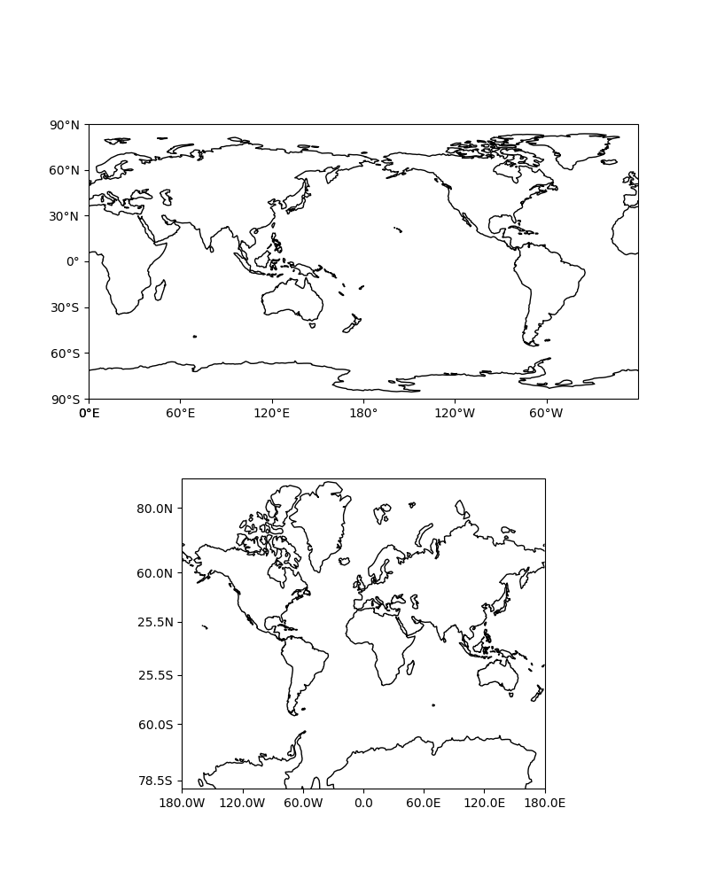

Note
Click here to download the full example code
Tick Labels¶
This example demonstrates adding tick labels to maps on rectangular projections using special tick formatters.
import cartopy.crs as ccrs
from cartopy.mpl.ticker import LongitudeFormatter, LatitudeFormatter
import matplotlib.pyplot as plt
def main():
fig = plt.figure(figsize=(8, 10))
# Label axes of a Plate Carree projection with a central longitude of 180:
ax1 = fig.add_subplot(2, 1, 1,
projection=ccrs.PlateCarree(central_longitude=180))
ax1.set_global()
ax1.coastlines()
ax1.set_xticks([0, 60, 120, 180, 240, 300, 360], crs=ccrs.PlateCarree())
ax1.set_yticks([-90, -60, -30, 0, 30, 60, 90], crs=ccrs.PlateCarree())
lon_formatter = LongitudeFormatter(zero_direction_label=True)
lat_formatter = LatitudeFormatter()
ax1.xaxis.set_major_formatter(lon_formatter)
ax1.yaxis.set_major_formatter(lat_formatter)
# Label axes of a Mercator projection without degree symbols in the labels
# and formatting labels to include 1 decimal place:
ax2 = fig.add_subplot(2, 1, 2, projection=ccrs.Mercator())
ax2.set_global()
ax2.coastlines()
ax2.set_xticks([-180, -120, -60, 0, 60, 120, 180], crs=ccrs.PlateCarree())
ax2.set_yticks([-78.5, -60, -25.5, 25.5, 60, 80], crs=ccrs.PlateCarree())
lon_formatter = LongitudeFormatter(number_format='.1f',
degree_symbol='',
dateline_direction_label=True)
lat_formatter = LatitudeFormatter(number_format='.1f',
degree_symbol='')
ax2.xaxis.set_major_formatter(lon_formatter)
ax2.yaxis.set_major_formatter(lat_formatter)
plt.show()
if __name__ == '__main__':
main()
Total running time of the script: ( 0 minutes 0.027 seconds)